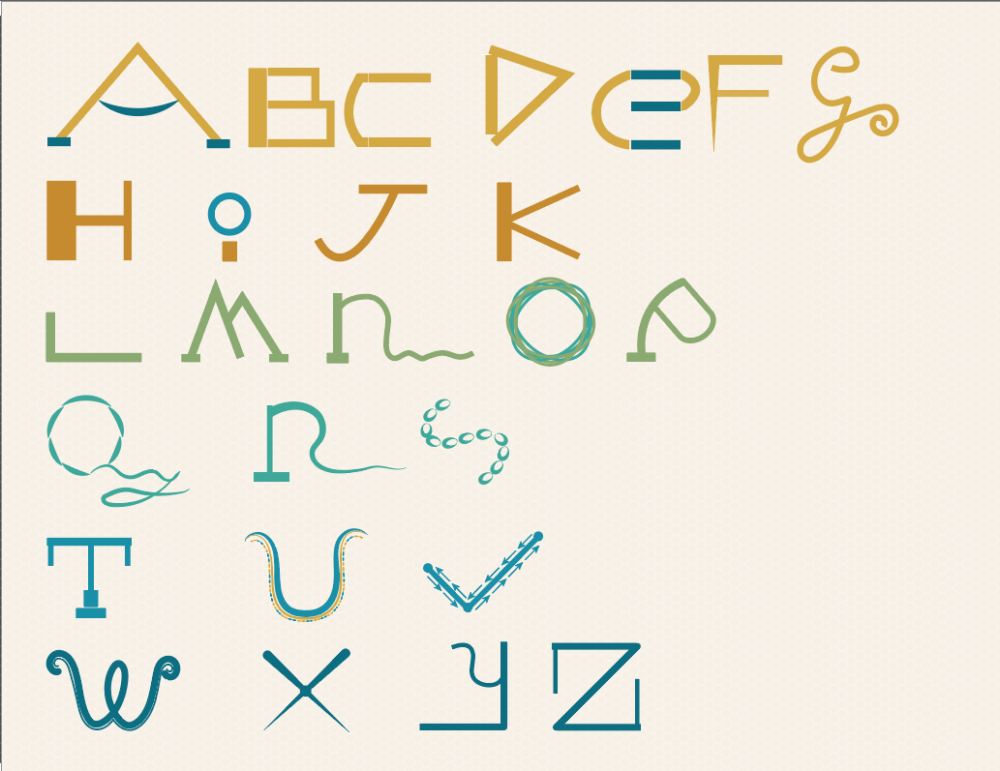

Context: Inspired by Pentagram’s Osh Gallery Alphabet, this project explores how far typography can be deconstructed and redesigned while maintaining legibility. Guided by Gestalt principles and core principles of design, the series establishes a system of visual rules that allows each letter to express an individual personality while contributing to a cohesive narrative. The alphabet unfolds through an intentional progression of visual complexity— starting with simple geometric foundations and evolving into intricate motifs in the later letterforms.
Goal: To create a cohesive letter system where each letter explores the evolution of language— giving each letter a unique design aligned with their identity, while driving an overarching story that moves from simple foundation to complex visual expressions.
Process & Iterations:
Consulted Claude AI for initial concept brainstorming, layout, and defining foundational visual rules before moving to thumbnail sketches and vector iterations in Adobe Illustrator.

Step 1
Initial thumbnail sketches exploring deconstructed letterforms based on Gestalt rules and AI brainstorming.

Step 2
Vectorizing in Adobe Illustrator, mapping spacing grids, and refining colour palettes.
Step 3
Polishing narrative progression, typography scale, and poster layout composition.
The Challenges:
- Balancing Creativity with Legibility: Pushing each letter's design far enough to feel unique without losing the recognizable essence of its character.
- Maintaining Cohesion vs. Individuality: Establishing visual rules allowing each letter to act as an individual while remaining connected to the overarching system.
- Managing Narrative Progression: Successfully evolving design complexity across the alphabet—from simple geometric foundations to intricate motifs.
- Typographic Storytelling: Treating typography as a medium for visual storytelling rather than just a functional communication tool.
Key Features & Highlights:
- System-Based Design Structure: Built entirely on Gestalt Principles and fundamental design principles using a cohesive set of visual rules.
- Progressive Complexity Scale: Features an intentional narrative arc evolving from clean geometric shapes to complex decorative motifs.
- Individualized Letter Personalities: Each letter is treated as an independent character with its own distinct purpose.
- Balanced Legibility & Abstraction: Preserves recognizable letter characteristics while maximizing creative visual deconstruction.
- Iterative Workflow: Multi-stage process moving from AI-assisted brainstorming to physical sketches and digital vector rendering.